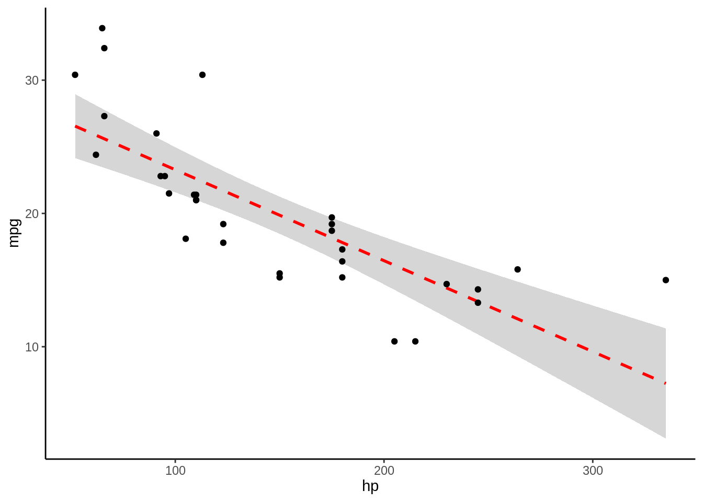
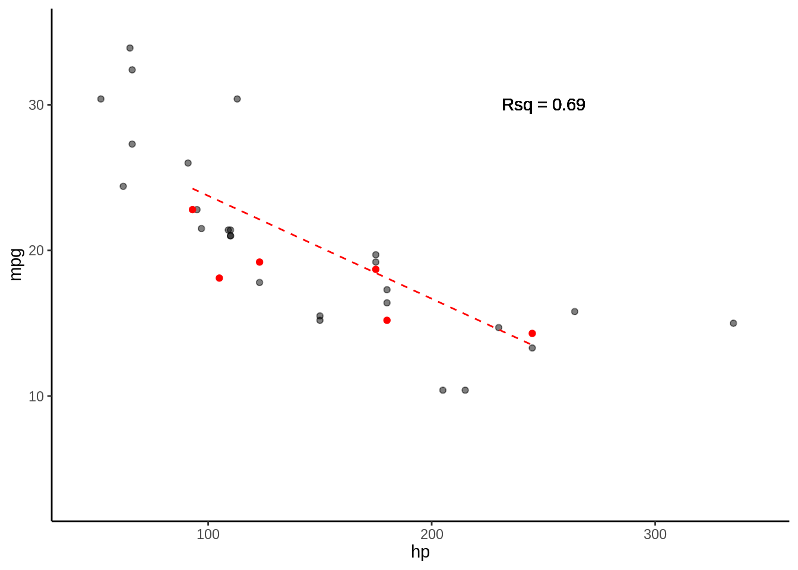
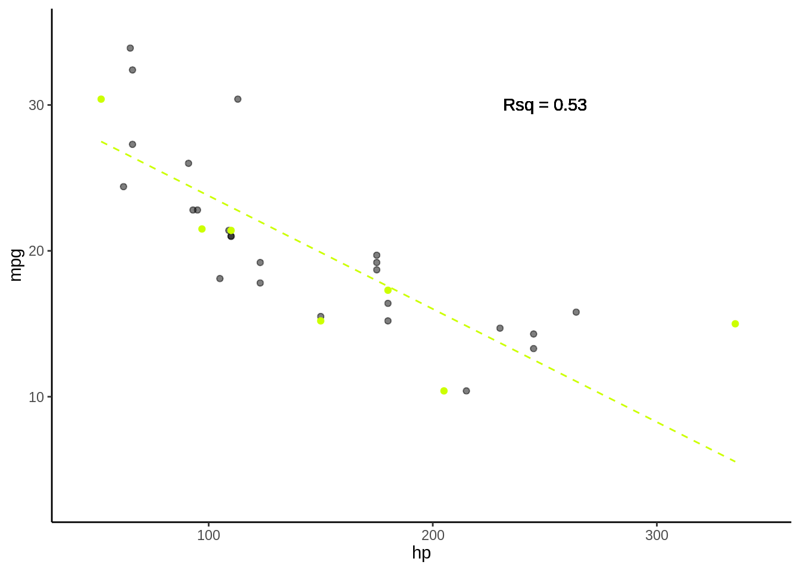
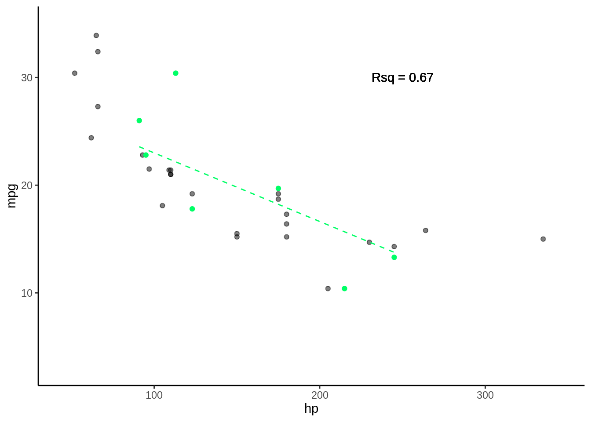
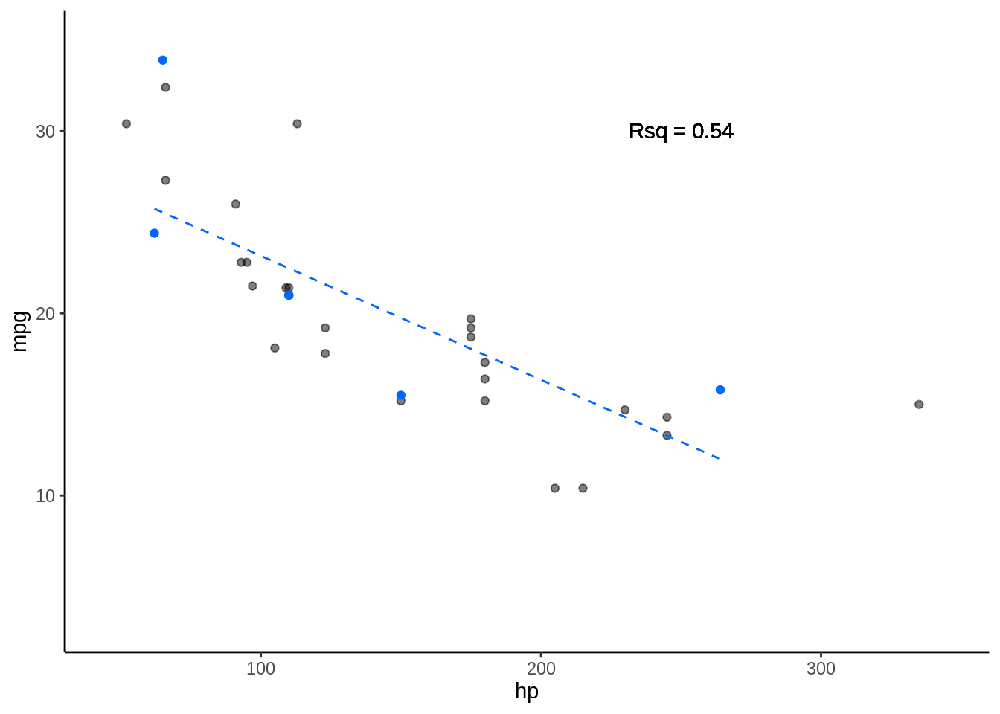
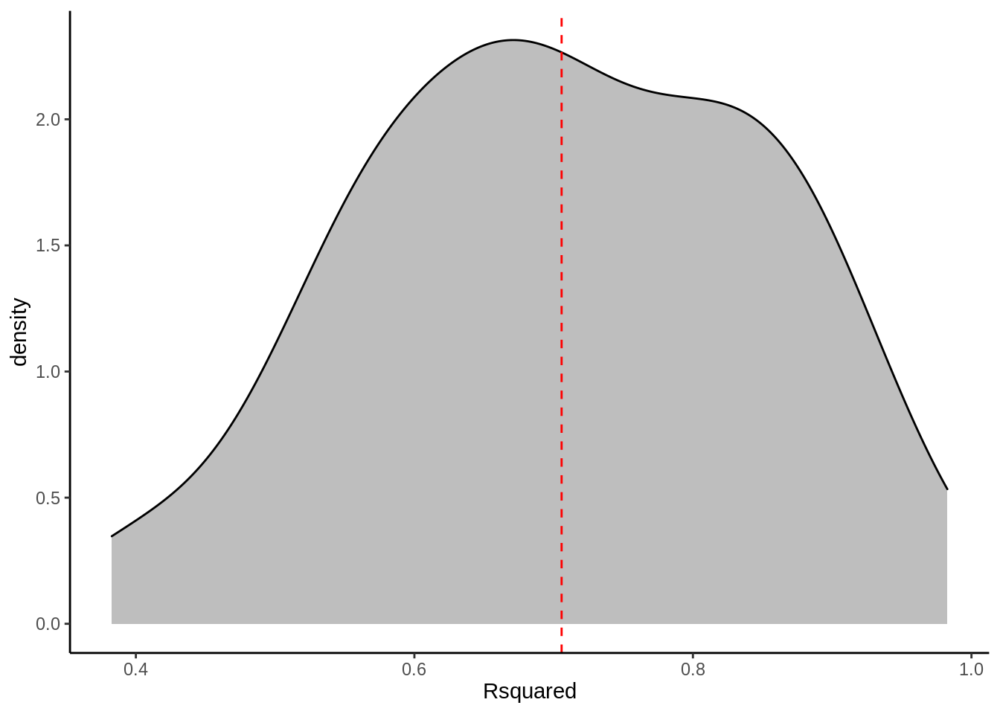

Capítulo 5 Crossvalidation
5.1 Paquetes necesarios para este capítulo
Para este capitulo necesitas tener instalado los paquetes tidyverse (Wickham 2019), broom (Robinson and Hayes 2020), caret (Kuhn and Johnson 2013) y MuMIn (Bartoń 2019)
5.1.1 Presentación html
Puedes seguir la clase de los videos en el siguiente link
y ver la clase en vivo desde las 20:30 horas el día jueves 19 de Mayo del 2020 a continuación
El script de esta y otras clases anteriores se encuentran en el siguiente link
5.1.2 A veces no se pueden usar criterios de información
- No se pueden calcular IC
- No se cumplen supuestos de criterios de información
- Comparacion entre distintos tipos de modelos (GLM, vs GAM vs RPART, etc)
- Se aplican distintas transformaciones a la variable respuesta (GLM)
- Varios terminos polinomiales (no se debe promediar modelos)
5.1.3 Alternativas a los métodos de criterios de información
- Simular que presentamos datos nuevos
- Crossvalidation
- Bootstrapping
- Leave one out

5.1.4 k-fold Crossvalidation
- Divido aleatoreamente mi base de datos en \(k\) grupos
- Entreno mis modelos con \(k-1\) grupos
- Testeo con el grupo \(k_i\)
- Promedio medida de desempeño por ejemplo \(R^2\)
5.1.5 Volvamos al ejemplo de hp

- Veamos como evaluamos 1 modelo \(mpg = \beta_1 hp +c\)
- \(R^2\) = 0.6
5.2 Paso 1 K-fold
5.2.1 Divido my base en K
- En este caso K = 5
- Dividiremos nuestra base de datos en 5 partes iguales

5.3 Paso 2 Entreno y testeo para cada K
5.3.0.1 Fold 1

- Rsq = c(0.61)
5.3.0.2 Fold 2

- Rsq = c(0.61, 0.65)
5.3.0.3 Fold 3

- Rsq = c(0.61, 0.65, 0.89)
5.3.0.4 Fold 4

- Rsq = c(0.61, 0.65, 0.89, 0.6)
5.3.0.5 Fold 5

- Rsq = c(0.61, 0.65, 0.89, 0.6, 0.67), media = 0.68
5.3.1 k-fold repeated Crossvalidation
- Repito esto n veces
- 10-repeated-5-fold-crossvalidation = 50 \(R^2\)

| Rsquared | Resample |
|---|---|
| 0.383 | Fold1.Rep01 |
| 0.776 | Fold2.Rep01 |
| 0.550 | Fold3.Rep01 |
| 0.910 | Fold4.Rep01 |
| 0.667 | Fold5.Rep01 |
| 0.682 | Fold1.Rep02 |
| 0.869 | Fold2.Rep02 |
| 0.562 | Fold3.Rep02 |
| 0.729 | Fold4.Rep02 |
| 0.615 | Fold5.Rep02 |
| 0.858 | Fold1.Rep03 |
| 0.677 | Fold2.Rep03 |
| 0.500 | Fold3.Rep03 |
| 0.639 | Fold4.Rep03 |
| 0.615 | Fold5.Rep03 |
| 0.838 | Fold1.Rep04 |
| 0.983 | Fold2.Rep04 |
| 0.718 | Fold3.Rep04 |
| 0.609 | Fold4.Rep04 |
| 0.832 | Fold5.Rep04 |
| 0.901 | Fold1.Rep05 |
| 0.753 | Fold2.Rep05 |
| 0.521 | Fold3.Rep05 |
| 0.543 | Fold4.Rep05 |
| 0.840 | Fold5.Rep05 |
| 0.771 | Fold1.Rep06 |
| 0.576 | Fold2.Rep06 |
| 0.845 | Fold3.Rep06 |
| 0.681 | Fold4.Rep06 |
| 0.659 | Fold5.Rep06 |
| 0.860 | Fold1.Rep07 |
| 0.550 | Fold2.Rep07 |
| 0.612 | Fold3.Rep07 |
| 0.838 | Fold4.Rep07 |
| 0.591 | Fold5.Rep07 |
| 0.683 | Fold1.Rep08 |
| 0.910 | Fold2.Rep08 |
| 0.795 | Fold3.Rep08 |
| 0.469 | Fold4.Rep08 |
| 0.902 | Fold5.Rep08 |
| 0.645 | Fold1.Rep09 |
| 0.557 | Fold2.Rep09 |
| 0.788 | Fold3.Rep09 |
| 0.686 | Fold4.Rep09 |
| 0.788 | Fold5.Rep09 |
| 0.406 | Fold1.Rep10 |
| 0.921 | Fold2.Rep10 |
| 0.759 | Fold3.Rep10 |
| 0.707 | Fold4.Rep10 |
| 0.718 | Fold5.Rep10 |
- \(R^2\) = 0.7057077

5.4 Seleccionando modelos usando k-fold repeated Crossvalidation
Modelos candidatos
- \(mpg = \beta_1hp + c\)
- \(mpg = \beta_1hp + \beta_2hp^2 + c\)
- \(mpg = \beta_1hp + \beta_2hp^2 + \beta_3hp^3 + c\)
- \(mpg = \beta_1hp + \beta_2hp^2 + \beta_3hp^3 + \beta_4hp^4 + c\)
- \(mpg = \beta_1hp + \beta_2hp^2 + \beta_3hp^3 + \beta_4hp^4 + \beta_5hp^5 + c\)
- \(mpg = \beta_1hp + \beta_2hp^2 + \beta_3hp^3 + \beta_4hp^4 + \beta_5hp^5 + \beta_6hp^6 + c\)
5.4.1 Seleccionando por AICc
data("mtcars")
fit1 <- lm(mpg ~ hp, data = mtcars)
fit2 <- lm(mpg ~ hp + I(hp^2), data = mtcars)
fit3 <- lm(mpg ~ hp + I(hp^2) + I(hp^3), data = mtcars)
fit4 <- lm(mpg ~ hp + I(hp^2) + I(hp^3) + I(hp^4), data = mtcars)
fit5 <- lm(mpg ~ hp + I(hp^2) + I(hp^3) + I(hp^4) + I(hp^5), data = mtcars)
fit6 <- lm(mpg ~ hp + I(hp^2) + I(hp^3) + I(hp^4) + I(hp^5) + I(hp^6), data = mtcars)
models <- list(fit1, fit2, fit3, fit4, fit5, fit6)
SelectedMods <- model.sel(models)| (Intercept) | hp | I(hp^2) | I(hp^3) | I(hp^4) | I(hp^5) | I(hp^6) | AICc | delta | weight |
|---|---|---|---|---|---|---|---|---|---|
| 40.41 | -0.21 | 0.00 | NA | NA | NA | NA | 169.08 | 0.00 | 0.70 |
| 44.22 | -0.29 | 0.00 | 0 | NA | NA | NA | 171.32 | 2.24 | 0.23 |
| 45.36 | -0.33 | 0.00 | 0 | 0 | NA | NA | 174.36 | 5.28 | 0.05 |
| 61.80 | -0.96 | 0.01 | 0 | 0 | 0 | NA | 177.45 | 8.37 | 0.01 |
| -62.95 | 4.81 | -0.09 | 0 | 0 | 0 | 0 | 178.28 | 9.20 | 0.01 |
| 30.10 | -0.07 | NA | NA | NA | NA | NA | 182.10 | 13.01 | 0.00 |
5.4.2 Seleccionando por n-repeated-K-fold-crossvalidation
- para 1 modelo
set.seed(2020)
ctrl <- trainControl(method = "repeatedcv", number = 5, repeats = 50)
DF <- train(mpg ~ hp, data = mtcars, method = "lm", trControl = ctrl)$resample
DF <- DF %>% dplyr::select(Rsquared, Resample)form1 <- "mpg ~ hp"
form2 <- "mpg ~ hp + I(hp^2)"
form3 <- "mpg ~ hp + I(hp^2) + I(hp^3)"
form4 <- "mpg ~ hp + I(hp^2) + I(hp^3) + I(hp^4)"
form5 <- "mpg ~ hp + I(hp^2) + I(hp^3) + I(hp^4) + I(hp^5)"
form6 <- "mpg ~ hp + I(hp^2) + I(hp^3) + I(hp^4) + I(hp^5) + I(hp^6)"
forms <- list(form1, form2, form3, form4, form5, form6)
K = (2:7)
ctrl <- trainControl(method = "repeatedcv", number = 5, repeats = 50)set.seed(2020)
Tests <- forms %>% map(~train(as.formula(.x),
data = mtcars, method = "lm",
trControl = ctrl)) %>% map(~as.data.frame(.x$resample)) %>%
map(~dplyr::select(.x, Rsquared)) %>%
map(~summarise_all(.x, funs(mean,
sd), na.rm = T)) %>% map2(.y = forms,
~mutate(.x, model = .y)) %>%
reduce(bind_rows) %>% mutate(K = K) %>%
arrange(desc(mean))| mean | sd | model | K |
|---|---|---|---|
| 0.785 | 0.162 | mpg ~ hp + I(hp^2) | 3 |
| 0.766 | 0.180 | mpg ~ hp + I(hp^2) + I(hp^3) | 4 |
| 0.713 | 0.145 | mpg ~ hp | 2 |
| 0.655 | 0.321 | mpg ~ hp + I(hp^2) + I(hp^3) + I(hp^4) | 5 |
| 0.633 | 0.303 | mpg ~ hp + I(hp^2) + I(hp^3) + I(hp^4) + I(hp^5) | 6 |
| 0.632 | 0.294 | mpg ~ hp + I(hp^2) + I(hp^3) + I(hp^4) + I(hp^5) + I(hp^6) | 7 |
References
Bartoń, Kamil. 2019. MuMIn: Multi-Model Inference. https://CRAN.R-project.org/package=MuMIn.
Kuhn, Max, and Kjell Johnson. 2013. Applied Predictive Modeling. Vol. 26. Springer.
Robinson, David, and Alex Hayes. 2020. Broom: Convert Statistical Analysis Objects into Tidy Tibbles. https://CRAN.R-project.org/package=broom.
Wickham, Hadley. 2019. Tidyverse: Easily Install and Load the ’Tidyverse’. https://CRAN.R-project.org/package=tidyverse.